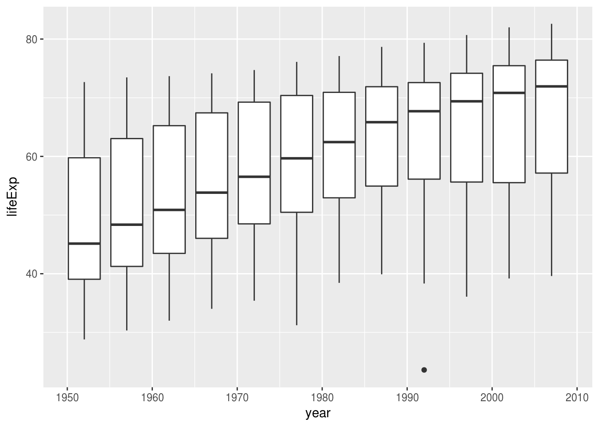

Making plots and being able to write output files is important. However, the most important part of any analysis is communicating your findings effectively! The rmarkdown package is one of the best and easiest ways of doing this. It let’s you create a fancy looking report without ever leaving RStudio. You can interleave your code and plots together with explanation text and formatting you might normally do in a tool like Microsoft Word. You can even make websites with it (like this one!)!
Let’s get started with R Markdown and make ourselves a sweet report.
In RStudio, go to File -> New File -> R Markdown. It will ask you what you want to call the file - leave the output as HTML for now.
You should see a file open with a lot of text and code already there. This is the default R Markdown document and comes with a lot of pointers about how to do things. For now, save the file as example.Rmd, and hit the “Knit” button.
If everything went well, you should see a nicely formatted webpage/ report pop up in RStudio’s built-in browser. Congratulations, you’ve made your first report!
Now that we know everything’s working, let’s start from scratch and learn how R Markdown works step-by-step. The first thing we should do is delete everything except for the following:
---
title: "test"
author: "Jeff Stafford"
date: "August 20, 2017"
output: html_document
---The stuff between the ---s is called YAML - it’s a markup format that describes what kind of document to make, who wrote it, and other technical bits that’s not actual content in your report. If you want, you can modify it, but let’s leave it be for now.
At the bottom of the document, let’s start typing some text. Everything that follows is example markdown output and syntax:
Normal characters result in normal text.
*this makes italics*
**big bad bold text**
***italic AND bold***
Horizontal lines can be made with lots of dashes. Like this:
----------------------
To start a list, we can use asterisks:
We can make a numbered list by just typing 1. 2. 3.
To make a block of code-y looking text, we use backticks:
`some code`
```
Three backticks makes
a block of text
look the same way.```
A hyperlink looks like [link text](www.some-website.ca)
Images are just a link with an ! in front:

Text on subsequent lines gets treated as the same line. To have text appear in a separate line/paragraph, you need a blank line in between.
To include code in a report, we just change the “code” styling slightly. Add a {r} after the triple backticks to have that block of text get treated as R code. The top of the code header should look like this: ```{r}
In practice, it looks something like this:
5 + 6## [1] 11print("The code output gets put directly below")## [1] "The code output gets put directly below"If you want to display data, you have a couple options. The first, is just to print out data the way you normally would.
library(gapminder)
head(gapminder)## # A tibble: 6 x 6
## country continent year lifeExp pop gdpPercap
## <fctr> <fctr> <int> <dbl> <int> <dbl>
## 1 Afghanistan Asia 1952 28.8 8425333 779
## 2 Afghanistan Asia 1957 30.3 9240934 821
## 3 Afghanistan Asia 1962 32.0 10267083 853
## 4 Afghanistan Asia 1967 34.0 11537966 836
## 5 Afghanistan Asia 1972 36.1 13079460 740
## 6 Afghanistan Asia 1977 38.4 14880372 786However, there is a special function knitr::kable() that inserts a nice-looking table into your report. Depending on what your output format is, it sometimes is even interactive!
knitr::kable(head(gapminder))| country | continent | year | lifeExp | pop | gdpPercap |
|---|---|---|---|---|---|
| Afghanistan | Asia | 1952 | 28.801 | 8425333 | 779.4453 |
| Afghanistan | Asia | 1957 | 30.332 | 9240934 | 820.8530 |
| Afghanistan | Asia | 1962 | 31.997 | 10267083 | 853.1007 |
| Afghanistan | Asia | 1967 | 34.020 | 11537966 | 836.1971 |
| Afghanistan | Asia | 1972 | 36.088 | 13079460 | 739.9811 |
| Afghanistan | Asia | 1977 | 38.438 | 14880372 | 786.1134 |
You can put code inline in text by just typing “r some code” in backtics.
Plots are done the same way as code:
library(ggplot2)
ggplot(gapminder, aes(x=year, y=lifeExp, group=year)) +
geom_boxplot()
You can use R markdown to create HTML reports, Word documents, PDFs, and even websites. For instance, this entire lesson website was created using R markdown.
Using any dataset you want, find something interesting and write a report on it in RMarkdown (nycflights13) is a good starting point.
© Jeff Stafford // https://jstaf.github.io/r-data-science/